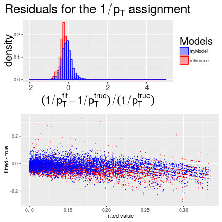
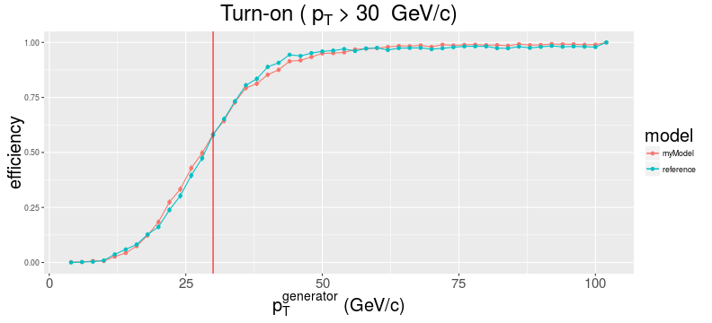
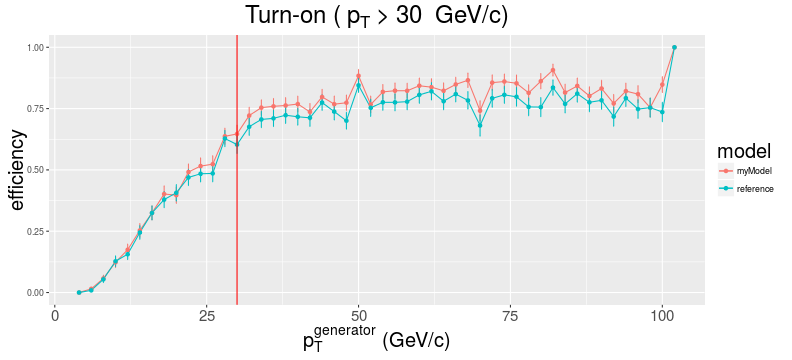
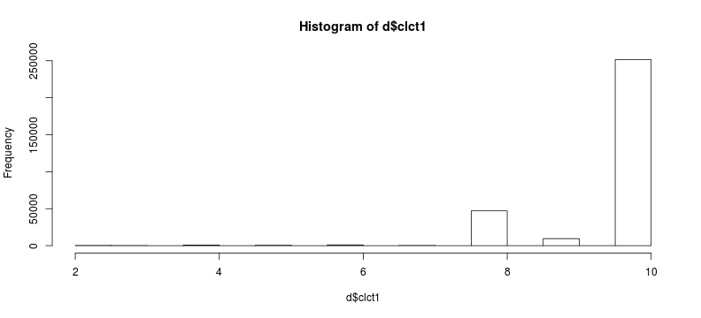

Input data
- generation steps
- regressors and response
Model selection
- standard in-sample metricts for models comparison
- linear model ("all models are wrong, but some are useful")
Trees
- boosting (BDT), bagging (Random Forest)
- predictors' importance
- residuals and turn-on curves
- ROCs and efficiency vs. rate curves
EMTF $p_T$ Regression
Khristian Kotov
Outline
Training data
- Generated 300\(k\) di-muons uniformly in \(0.9 < |\eta| < 2.4\) and \(0 < p_T < 100~GeV\)
- Re-emulated EMTF with Jia Fu's new code 1,2 (default switches)
- Produced csv file with my ntuplizer
The 20 predictors (no input from RPC system yet):
| type | trait | measurements with 4 stations | allowed values |
|---|---|---|---|
| \(\Delta\phi\) | continuous | 1-2, 1-3, 1-4, 2-3, 2-4, 3-4 | [-512 - +512] |
| \(\Delta\theta\) | continuous | 1-2, 1-3, 1-4, 2-3, 2-4, 3-4 | [-7 - +7] |
| CLCT_Pattern | categorical | 1, 2, 3, 4 | [2,3,4,5,6,7,8,9,10] |
| FrontRear | categorical | 1, 2, 3, 4 | [0,1] |
Response variable: \(1/p_T\) to rank up accuracy of low \(p_T\) regression
Simplest performace metrics
- Residual sum of squares (\(RSS\)) and Root Mean Squared Error (\(RMSE\)):
\[ RSS = \Sigma^N_{i=0} (y_i - \hat{y}_i)^2, RMSE = \sqrt{\frac{1}{N}\Sigma^N_{i=0}(y_i - \hat{y}_i)^2} \]
- Fraction of variance explained (\(R^2\)):
\[ R^2 = 1 - \frac{RSS}{TSS}, TSS = \Sigma^N_{i=0} (y_i - \bar{y}_i)^2 \]
- 0 - no better than the baseline \(\hat{y} = \bar{y}\) model, 1 - ideal model
- for simple linear regression \(y \sim x\), \(R\) is just a correlation between \(x\) and \(y\)
The more predictors (freedoms) one uses to build a model the better it fits training data
Metrices above will always favor more complex models fitting in-sample noise
In-sample performace and model complexity
\(F\)-statistics (lack-of-fit sum-of-squares over pure error sum-of-squares): \[ F = \frac{(RSS_0-RSS_1)/(p_1-p_0)}{RSS_1/(N-p_1-1)} \sim F_{p_1-p_0,N-p_1-1} \rightarrow \chi^2_{p_1-p_0}/(p_1-p_0) \]
- tests if model with \(p_1\) parameters is better than nested model with \(p_0\) parameters
- \(z\)-score of a coefficient is equivalent to \(F\)-statistics for dropping this coefficient out
- unlike the \(z\)-score, \(F\)-statistics can also handle categorical predictors
Adjusted \(R^2\) (regular \(R^2\) penalazed for model complexity):
\[ Adjusted~R^2 = 1 - \frac{RSS/(N-p-1)}{TSS/(N-1)} \]
- Mallow's \(C_p = \frac{1}{N}(RSS + 2d\hat{\sigma}_{\epsilon(y)}^2)\), (\(d < p\) - number of predictors used)
- second term (form for linear model) compensates against in-sample overfitting
- \(C_p\) is commonly used for best subset and stepwise model selections
Ranging predictors for linear model
Analysis of Variance Table
Model 1: 1/pt ~ abs(dPhi12)
Model 2: 1/pt ~ abs(dPhi12) + abs(dPhi23)
Model 3: 1/pt ~ abs(dPhi12) + abs(dPhi23) + abs(dPhi34)
Model 4: 1/pt ~ abs(dPhi12) + abs(dPhi23) + abs(dPhi34) + abs(dPhi13)
Model 5: 1/pt ~ abs(dPhi12) + abs(dPhi23) + abs(dPhi34) + abs(dPhi13) +
abs(dPhi14)
Model 6: 1/pt ~ abs(dPhi12) + abs(dPhi23) + abs(dPhi34) + abs(dPhi13) +
abs(dPhi14) + abs(dPhi24)
Res.Df RSS Df Sum of Sq F Pr(>F)
1 311344 169.88
2 311343 169.87 1 0.0107 23.072 1.562e-06 ***
3 311342 161.19 1 8.6854 18758.408 < 2.2e-16 ***
4 311341 156.31 1 4.8794 10538.338 < 2.2e-16 ***
5 311340 156.21 1 0.0960 207.349 < 2.2e-16 ***
6 311339 144.16 1 12.0570 26040.235 < 2.2e-16 ***
---
Signif. codes: 0 '***' 0.001 '**' 0.01 '*' 0.05 '.' 0.1 ' ' 1
Visualizing some of the linear fits
Linear fit does not do well for dPhi23 (also seen as low \(F\)-statistics above):
plot(abs(v$dPhi12), 1/v$pt, cex=.1)
abline(lm(1/pt~abs(dPhi12),v),col="red")
plot(abs(v$dPhi23), 1/v$pt, cex=.1)
abline(lm(1/pt~abs(dPhi23),v),col="red")

Independent view with lasso regularization
Lasso calculates model parameters \(\beta\) by minimizing loss \(RSS + \lambda\Sigma_{i=1}^p|\beta_i|\)
x = model.matrix(1/pt ~ abs(dPhi12) + abs(dPhi23) + abs(dPhi34) - 1, v)
plot( glmnet(x, 1/d$pt), xvar="lambda", label=T )

dPhi12 (#1) is the last suppressed with growing \(\lambda\), while dPhi23 (#2) is sacrificed first
Scaling up number of predictors in linear model
Best subset selection "switches on" (shades of gray) predictors as follows:

The most important preditors in a linear model (of my choise) are dPhi, clct1 and fr1
Tree-based methods
Simple decision tree: just crude partitioning of the predictor space
Boosting (in BDT):
- iteratively fit \((x,r)\), where residuals \(r_0 = y\) and \(r_k = r_{k-1} - \lambda\hat{f}_{k-1}(x)\)
- output of the boosted model with complex decision boundary: \(\hat{f}(x) = \Sigma_{k=1}^K\lambda \hat{f}_k(x)\)
Bagging or Bootstrap aggregation (in Random Forest or RF used through the rest of this study):
- resample input data multiple times leaving a part of randomly choosen events out
- each time fit a collection of small \(mtry\)-sized trees of randomly choosen predictors
- average these (largely de-corelated) noisy but unbiased models to reduce variance
- along the way construct out-of-bag (OOB) error estimate with the left out data
Cross-validation (repetitive testing of a model on data never seen before) is part of RF training
Selecting best predictors for trees
Absolute predictor's importance = difference in predictive measure (e.g. MSE) with the original training dataset and a dataset with this predictor being randomly 'permuted':
Growing trees.. Progress: 0%. Estimated remaining time: 5 hours, 32 minutes, 40 seconds.
Growing trees.. Progress: 3%. Estimated remaining time: 39 minutes, 20 seconds.
Growing trees.. Progress: 5%. Estimated remaining time: 31 minutes, 32 seconds.
Growing trees.. Progress: 9%. Estimated remaining time: 24 minutes, 10 seconds.
Growing trees.. Progress: 12%. Estimated remaining time: 21 minutes, 50 seconds.
Growing trees.. Progress: 15%. Estimated remaining time: 19 minutes, 57 seconds.
Growing trees.. Progress: 18%. Estimated remaining time: 18 minutes, 28 seconds.
Growing trees.. Progress: 21%. Estimated remaining time: 17 minutes, 32 seconds.
Growing trees.. Progress: 23%. Estimated remaining time: 16 minutes, 49 seconds.
Growing trees.. Progress: 27%. Estimated remaining time: 15 minutes, 32 seconds.
Growing trees.. Progress: 29%. Estimated remaining time: 15 minutes, 22 seconds.
Growing trees.. Progress: 32%. Estimated remaining time: 14 minutes, 36 seconds.
Growing trees.. Progress: 35%. Estimated remaining time: 13 minutes, 46 seconds.
Growing trees.. Progress: 37%. Estimated remaining time: 13 minutes, 20 seconds.
Growing trees.. Progress: 40%. Estimated remaining time: 12 minutes, 45 seconds.
Growing trees.. Progress: 42%. Estimated remaining time: 12 minutes, 10 seconds.
Growing trees.. Progress: 45%. Estimated remaining time: 11 minutes, 33 seconds.
Growing trees.. Progress: 48%. Estimated remaining time: 10 minutes, 46 seconds.
Growing trees.. Progress: 51%. Estimated remaining time: 10 minutes, 22 seconds.
Growing trees.. Progress: 54%. Estimated remaining time: 9 minutes, 29 seconds.
Growing trees.. Progress: 57%. Estimated remaining time: 8 minutes, 59 seconds.
Growing trees.. Progress: 59%. Estimated remaining time: 8 minutes, 35 seconds.
Growing trees.. Progress: 62%. Estimated remaining time: 7 minutes, 54 seconds.
Growing trees.. Progress: 64%. Estimated remaining time: 7 minutes, 29 seconds.
Growing trees.. Progress: 67%. Estimated remaining time: 6 minutes, 57 seconds.
Growing trees.. Progress: 69%. Estimated remaining time: 6 minutes, 21 seconds.
Growing trees.. Progress: 72%. Estimated remaining time: 5 minutes, 53 seconds.
Growing trees.. Progress: 74%. Estimated remaining time: 5 minutes, 19 seconds.
Growing trees.. Progress: 77%. Estimated remaining time: 4 minutes, 44 seconds.
Growing trees.. Progress: 80%. Estimated remaining time: 4 minutes, 2 seconds.
Growing trees.. Progress: 83%. Estimated remaining time: 3 minutes, 30 seconds.
Growing trees.. Progress: 86%. Estimated remaining time: 2 minutes, 50 seconds.
Growing trees.. Progress: 89%. Estimated remaining time: 2 minutes, 9 seconds.
Growing trees.. Progress: 92%. Estimated remaining time: 1 minute, 35 seconds.
Growing trees.. Progress: 96%. Estimated remaining time: 53 seconds.
Growing trees.. Progress: 98%. Estimated remaining time: 19 seconds.
dPhi predictors are the winners (with the first station been most important) followed by clct1
Input compression
I need to fit the model above into our 2Gb Look Up Table addressed with just 30 bits
Required transformations:
- use mode compression: "heaviest" 4-station measurement is indexed with one bit
- make all predictors unsigned; "saturate" them to max value when they are too big
- assign a bit per relevant relative sign (e.g. sign(\(\Delta\phi_{2-3}*\Delta\phi_{1-2}\)) \(\equiv\) S(\(\Delta\phi_{2-3/1-2}\)))
- strip non-informative CLCT levels (linear model suggest clct=6,8,10 most important ones)
Following (potentially sub-optimal) scheme, inspired by current code, is used in next slides:
| \(\Delta\phi_{1-2}\) | \(\Delta\phi_{1-3}\) | \(\Delta\phi_{1-4}\) | \(\Delta\phi_{2-3}\) | \(\Delta\phi_{2-4}\) | \(\Delta\phi_{3-4}\) | S(\(\Delta\phi_{2-3/1-2}\)) | S(\(\Delta\phi_{3-4/1-2}\)) | \(\Delta\theta_{1-2}\) | clct1 |
|---|---|---|---|---|---|---|---|---|---|
| [6:0] | -- | -- | [6:0] | -- | [6:0] | [0] | [0] | [1:0] | [1:0] |
Residuals
Growing trees.. Progress: 9%. Estimated remaining time: 5 minutes, 13 seconds.
Growing trees.. Progress: 25%. Estimated remaining time: 3 minutes, 6 seconds.
Growing trees.. Progress: 39%. Estimated remaining time: 2 minutes, 27 seconds.
Growing trees.. Progress: 54%. Estimated remaining time: 1 minute, 47 seconds.
Growing trees.. Progress: 70%. Estimated remaining time: 1 minute, 5 seconds.
Growing trees.. Progress: 89%. Estimated remaining time: 22 seconds.
[1] "Standard diviation for the reference: 0.0384502209678907"
[1] "Standard diviation for my model: 0.0416256175683441"

[1] "Standard diviation for the reference: 17.9980400950663"
[1] "Standard diviation for my model: 9.2854886658628"

Other performance metrics: turn-on curves

Summary
Ranking predictors by their importance is an easy job, fitting them in 30 bits is difficult
##
\[ \Large Backup \]
2-3-4 station tracks (mode_inv=14)
| \(\Delta\phi_{2-3}\) | \(\Delta\phi_{2-4}\) | \(\Delta\phi_{3-4}\) | clct2 | clct3 | clct4 |
|---|---|---|---|---|---|
| [6:0] | -- | [6:0] | [1:0] | [1:0] | [1:0] |

CLCT Patterns
